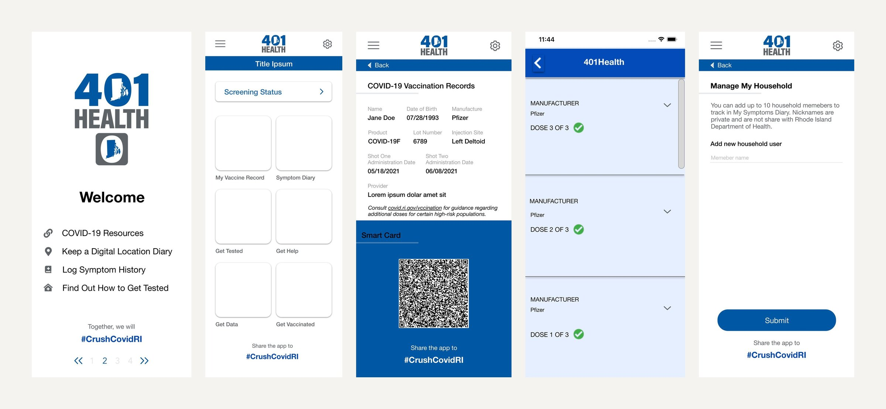
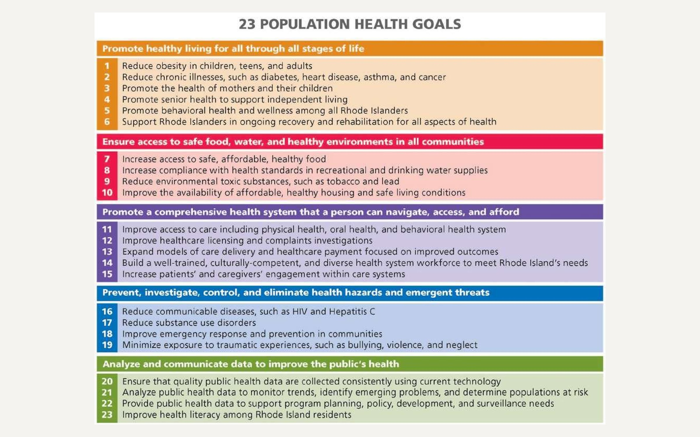
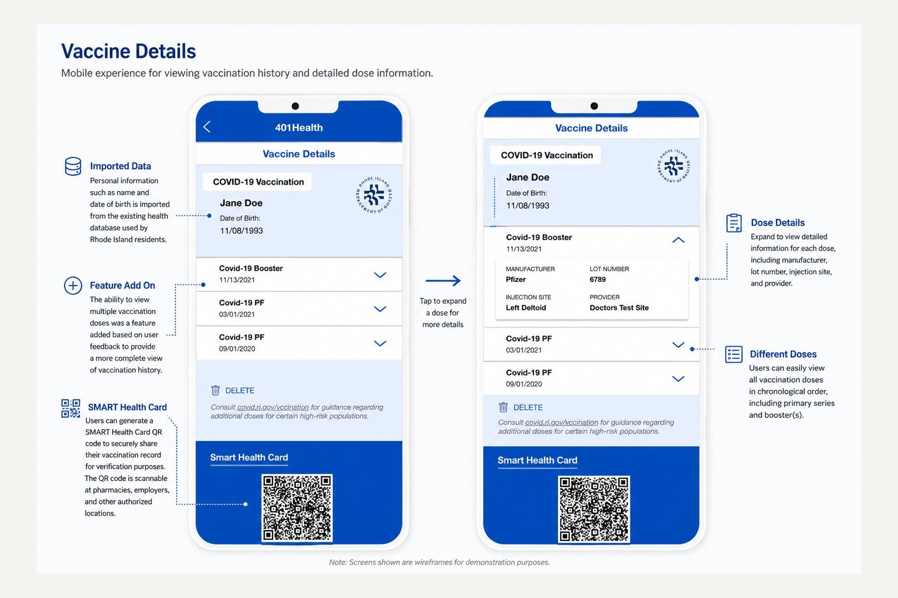
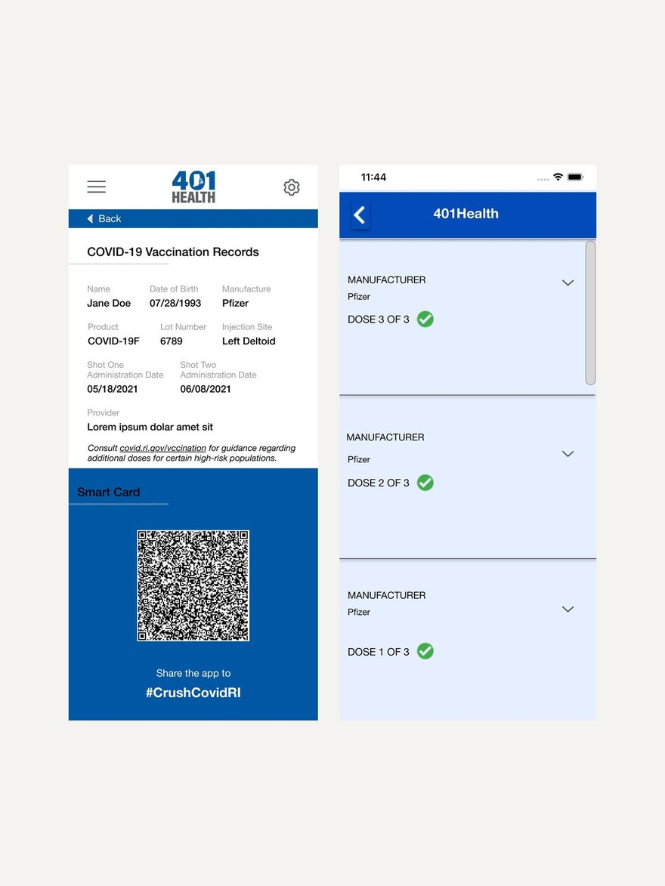

Rhode Island State COVID Vaccine App/401 Health App

Project Overview
The goal of this project was to improve the State of Rhode Island’s vaccine website and health application, making it easier for residents to report vaccination information and access their vaccination records. The redesigned experience streamlined the reporting process while providing the state with reliable, timely data to support public health decision-making during the COVID-19 pandemic. It also made proof of vaccination easier for residents to access and present when entering large events and other venues requiring verification. Ultimately, the experience aimed to increase vaccination reporting completion rates by 23%, while creating a simpler, more accessible way for residents to manage and use their vaccination information.
The Challenge
Building Trust and Increasing Adoption of Digital Vaccination Records
Research and stakeholder feedback revealed a key barrier to adoption: residents were hesitant to share personal health information and unsure how a digital platform would securely manage their vaccination records. At the same time, residents saw value in having convenient digital access to their vaccination information.
The challenge was to create a sign-up and onboarding experience that reduced friction, established trust, and clearly communicated the value of maintaining a digital vaccination record.
How might we...
- Create a seamless sign-up and onboarding experience that encourages residents to complete their vaccination record?
- Build trust by clearly communicating privacy, security, and how personal information is used?
- Demonstrate the value of digital vaccination records for events, travel, and other verification needs?
Reducing Friction Through Health Record Integration
A second challenge was eliminating the need for residents to manually re-enter vaccination information already reported to the Rhode Island Child and Adult Immunization Registry (RICAIR). Because healthcare providers and pharmacies were already submitting immunization data to RICAIR, residents expected their existing records to be available within the application.
The challenge was to design a secure, intuitive way for users to authorize access to their existing records while clearly communicating where their information came from and how it would be used.
How might we...
- Make it simple for residents to securely authorize access to their existing vaccination records?
- Clearly communicate where vaccination data comes from and how it is being used?
- Reduce unnecessary manual entry while maintaining confidence in the accuracy and privacy of health information?
The Approach/ Discovery & Stakeholder Alignment
To better understand the existing application experience, Rhode Island state employees shared user feedback and analytics related to website and app usage with my team. I conducted stakeholder interviews with employees across different areas of the program, typically in small groups of no more than two participants to enable focused discussions and gather perspectives from different areas of the program. Through conversations with employees about the existing app and web experience, I began to identify the Rhode Island Department of Health’s broader program goals and priorities. Aligning the design direction with these strategic objectives was essential to gaining leadership support and moving the project forward. The following goals helped guide the design process (Goals 20-23). Several key themes emerged, including frustration with manually re-entering vaccination information and concerns about trusting the system with sensitive health data. I also analyzed Google Play and Apple App Store reviews to identify recurring user pain points, usability issues, and technical challenges within the existing experience. Common themes included difficulties with account setup, barriers to completing key tasks, and uncertainty around how vaccination information was managed. See below.
These insights helped us identify usability opportunities, prioritize design recommendations, and guide the development of a more intuitive, accessible, and trustworthy vaccination management experience.

UX Design/ Feature Prioritization
The solution focused on reducing user effort by creating a streamlined authorization flow that automatically populated vaccination records from an existing health data source. Once authenticated, users could review their vaccination history, add missing information when needed, and manage household members within a single account. This approach reduced duplicate data entry while creating a more intuitive and efficient experience.
Feature prioritization centered on improving usability, accessibility, and access to essential public health services. Key features included:
- Vaccination Status: A clear status card displaying COVID-19 vaccination history, including individual doses.
- Multilingual Support: Terms and Conditions available in multiple languages, including Portuguese, to support Rhode Island’s diverse communities.
- Appointment Scheduling: An integrated calendar that allowed users to find and schedule vaccination appointments.
- Household Management: The ability to add and manage household members and their vaccination records from a single account.
- Symptom Diary: An optional tool for anonymously reporting post-vaccination symptoms, providing the Rhode Island Department of Health with data to support public health monitoring.
- Testing Location Map: An interactive map helping users quickly locate nearby COVID-19 testing services.
Desktop
Mobile
Scroll inside a phone to see the whole screen; click or tap to enlarge.
Fig. 04 — Desktop and mobile designs: the COVID-19 test scheduling portal and the 401 Health app


Results & Impact
The redesigned experience streamlined how Rhode Island residents accessed and managed their vaccination information by providing a digital alternative to the paper vaccination cards used during the initial COVID-19 vaccine rollout. The multilingual experience also expanded accessibility, helping more residents navigate and manage their health information with confidence.
Ongoing Evaluation
Long-term adoption and engagement metrics were outside the scope of my involvement. However, the design recommendations prioritized reducing friction, strengthening user trust, and simplifying access to critical vaccination information. The experience was also designed with flexibility in mind, allowing the platform to evolve alongside future vaccination programs and changing public health needs.
07
Reflection
This project strengthened my understanding of designing digital experiences where privacy, security, accessibility, and trust are fundamental to the user experience. Working with sensitive health information reinforced the importance of reducing unnecessary friction while clearly communicating how personal data is accessed and used—principles I continue to apply in my work today.
The project was also particularly meaningful because of the context in which it was developed. Contributing to a digital health experience during the COVID-19 pandemic gave me a deeper appreciation for the role UX design can play in helping communities navigate essential services during periods of uncertainty.
—